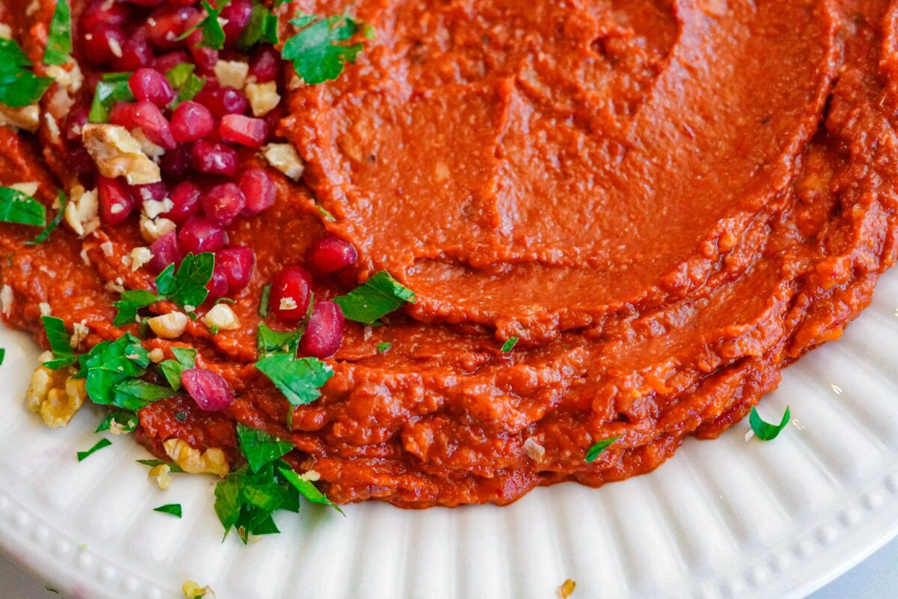

Muhammara
Ingredients:
- 3 red bell peppers
- 1 cup walnuts
- 2 slices bread
- Pomegranate molasses
- Olive oil
Instructions:
- Preheat your oven to 200°C (400°F). Place the red bell peppers on a baking tray and roast them for 20-25 minutes, turning occasionally, until the skin is charred and the peppers are soft. Once cooled, peel off the skin, remove the seeds, and set them aside.
- Soak the slices of stale bread in water for a few minutes until soft. Squeeze out the excess water and crumble the bread. In a food processor, combine the roasted peppers, walnuts, soaked bread, and pomegranate molasses. Begin blending, gradually adding olive oil until the mixture becomes smooth yet slightly textured. Adjust the seasoning with salt and, if desired, red pepper flakes.
- Transfer the Muhammara to a serving bowl. Drizzle with a little extra olive oil and garnish with chopped walnuts, a sprinkle of red pepper flakes, or a few drops of pomegranate molasses. Serve and enjoy!
Return to Home